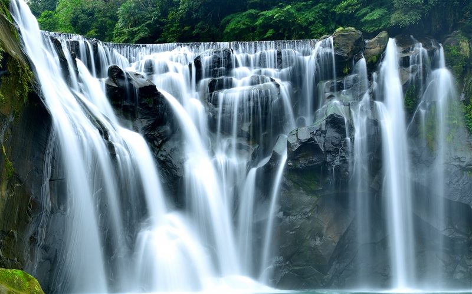
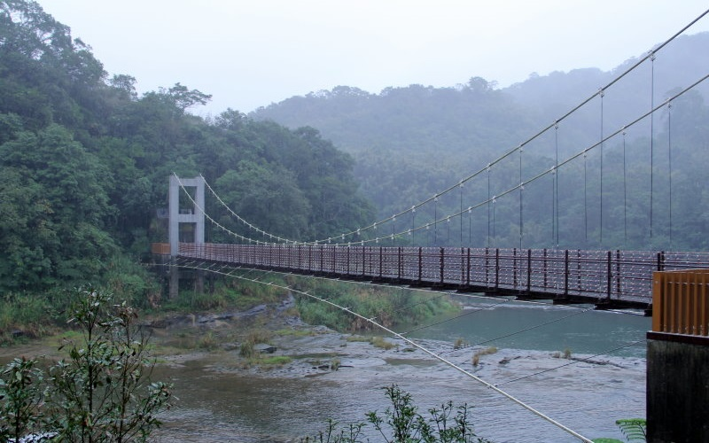
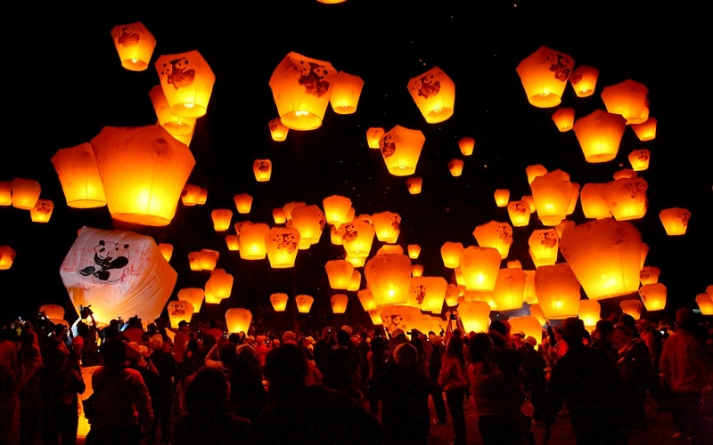

Pingxi
New Taipei City
Shifen Waterfall
 Pingxi district is the district with the sparsest population in New Taipei City. Because the source of the Keelung River
is located in this region, there are lots of waterfalls, such like the best-known Shifen Waterfall. It is the the broadest waterfall
in Taiwan and is a cascade waterfall in which the water flows in one direction and the rock is sloped in the opposite, just like
the Niagara Falls. Every year during the Lantern Festival, people have their wishes written on sky lanterns, and release them
to the skies during the Pingxi International Sky Lantern Festival.
- Best seasons: all year around
- Transportation:
Pingxi is served by the Pingxi Line of Taiwan Railway Administration.